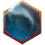

This is the standard Staff zerg build. If this page breaks for you, try the gw2skills.net link.
Gear
The key here is to get as much damage in as you feel comfortable with. I would recommend Marauder's stats (as shown above) for your armor. You could try playing with Berserker's stats if you're feeling spicy, but you will be squishy.
is also recommended for your weapon, though can work if you feel comfortable with the loss in health. The difference between Marauder and Berserker is you are trading Ferocity, Precision, and Vitality - Marauder offers health, higher critical hit chance, but lower critical damage at the same Power strength.
For your trinkets and back item, stick with Berserker stats, maybe swapping the Amulet for Marauder if you feel like you need more Vitality. If you have the resources, go for 18x (or equivalent of choice with +Power).
is also recommended for your weapon, though can work if you feel comfortable with the loss in health. The difference between Marauder and Berserker is you are trading Ferocity, Precision, and Vitality - Marauder offers health, higher critical hit chance, but lower critical damage at the same Power strength.
For your trinkets and back item, stick with Berserker stats, maybe swapping the Amulet for Marauder if you feel like you need more Vitality. If you have the resources, go for 18x (or equivalent of choice with +Power).
Runes & Sigils
For Runes: I recommend a full set of
as an all-around option to maximimze your Power stat and pump in extra damage.
will be iffy for uptime but offers highest theoretical damage,
can be a good option as well though you're sacrificing Power stats in favor of Precision and Ferocity. With the changes to various Runes, Eagle may be a better choice than Strength thanks to the increased damage to enemies below 50% health.
For Sigils: There's room for preference. I'm using + , though you might want to try filling out your second upgrade slot with / / for offense or / for defensive.
For Sigils: There's room for preference. I'm using + , though you might want to try filling out your second upgrade slot with / / for offense or / for defensive.
Skill Bar
Healing Skill:
for condi clear,
for damage and blasting finisher.
Utility Skills: and are going to be necessary to help you position and be safe. These two should be on your skill bar at all times while running with a tag because they help you close gaps.
can be subbed out for a more defensive option such as to give you stability and damage reduction on demand or for some damage immunity.
should be used to blast fields, tag enemies, and spike damage. The range to cast is 900 and the damage radius is 360. The main note here is to try not to waste it on tagging enemies.
For more sustained damage in an area (such as a choke), you could swap out Arcane Wave for Glyph of Storms. Primary usage of should be while attuned to Fire for to pile onto downs. Earth attunement's can be useful for blinding. Note that if you switch attunements while casting it will use the attunement you were in when you started. It can be useful for attunement juggling.
Avoid Water and Air attunement with this skill unless you're certain you can make use of or .
Elite Skills: All of the Elite skill options are meh. offers some more burst damage if you're caught on rotation or need an escape tool. Use (#5) for AoE damage at 600 range. Use (#3) to cleave through downs or to give yourself evade frames. Sparingly use (#4) to close gaps on a target or travel in a direction without a target.
Utility Skills: and are going to be necessary to help you position and be safe. These two should be on your skill bar at all times while running with a tag because they help you close gaps.
can be subbed out for a more defensive option such as to give you stability and damage reduction on demand or for some damage immunity.
should be used to blast fields, tag enemies, and spike damage. The range to cast is 900 and the damage radius is 360. The main note here is to try not to waste it on tagging enemies.
For more sustained damage in an area (such as a choke), you could swap out Arcane Wave for Glyph of Storms. Primary usage of should be while attuned to Fire for to pile onto downs. Earth attunement's can be useful for blinding. Note that if you switch attunements while casting it will use the attunement you were in when you started. It can be useful for attunement juggling.
Avoid Water and Air attunement with this skill unless you're certain you can make use of or .
Elite Skills: All of the Elite skill options are meh. offers some more burst damage if you're caught on rotation or need an escape tool. Use (#5) for AoE damage at 600 range. Use (#3) to cleave through downs or to give yourself evade frames. Sparingly use (#4) to close gaps on a target or travel in a direction without a target.
Specializations & Traits
Use the build shown above unless you're having problems or feel comfortable enough to test something new.
Fire: 1/1/1 for best damage, 3/1/1 for more sustain, 1/1/3 for utility.Air: 3/3/1 for best damage. 3/2/1 for (less comparative) damage increase, but without disabled target conditions.
Weaver: 3/2/1 for well-rounded, 1/2/1 for best damage, 3/3/1 for survivability.
Arcane Variant: Replace Air with Arcane if you want to sacrifice some damage for utility. Not really recommended for zerg play.
Consumables
Foods: For now, we're going to stick to heal on critical hit foods to counteract Retalliation. Keep an eye out for cost-efficient options with same or equivalent stats:
is a much cheaper option to
,
,
, and
. On the other hand,
offers Power instead of Precision and could be better, though much more tedious to acquire.
If you want to try to go MAX POWER, (cheaper version with shorter duration: ) or are options.... if you can sustain well enough without the heal-on-crit food.
Oils: Just like with your food, keep an eye out for cost-efficient options. has equivalent stats to and , but with different durations. is a bit more expensive, but if you really want to farm Karma then go for it.
If you want to try to go MAX POWER, (cheaper version with shorter duration: ) or are options.... if you can sustain well enough without the heal-on-crit food.
Oils: Just like with your food, keep an eye out for cost-efficient options. has equivalent stats to and , but with different durations. is a bit more expensive, but if you really want to farm Karma then go for it.
General Play
First things first: you're going to want to adjust some gameplay settings to ensure you get the most bang for you buck. Under General Options, look for the "Combat/Movement" section and make sure the following settings are set:
Primary damage attunement will be / so you can throw out and for damage. This also leaves on your bar for lines.
Switch to / when dropping (meatballs) to utilize bonus damage from the Weaver trait . Rotate back into / if you need sustained damage, work toward / if you need to chase.
When you're out of cooldowns or just need to save the AoE cooldowns a bit, use to roll out damage on up to 3 targets in a 180 radius. All of the other attunement #1 skills are inferior by comparison. Staff Elementalist / Weaver is not the type of class you use every cooldown on - there are many skills simply not worth the time it takes to cast them simply because Fireball is just that strong. However, keep in mind hat you will need to juggle attunements to react to the flow of the fight.
In some cases, camping / until you have about 6 seconds left on is your best option — primarily when things become very movement heavy or you have to shift your targeted area quickly and consistently. This allows you to rotate back into / for a quick and just before and . If you need more area-based damage quickly, prioritize swapping into / to throw out and possibly with auto-attack filler. Then you need to make the judgement call to cycle into Earth or Fire pending cooldowns and immediate needs. More roaming cleave? Fire for auto-attack into double for Meteor. More sustained area control/damage? Earth for Eruption filler back into core loop.
When out of combat and chasing the tag, try to stay in / x for the movement speed buff from .
A good opener to be in before a fight starts is or / so you can throw out and before a fight. If / , pierces targets and chills with 1200 range which can be useful and puts into secondary which is less useful for damage. You'll have to make a judgement call if you have time to throw out or as the fight breaks out.
Some general positioning advice:
As a final note: You will not have your own Stability with this setup. If you need it, look into slotting . Otherwise, you will be relying on to stun break. In general, you will want to reserve at least one charge in case of emergency and one for mobility.
- Autotargeting: DISABLED
- Allow Skill Retargeting: ENABLED
Primary damage attunement will be / so you can throw out and for damage. This also leaves on your bar for lines.
Switch to / when dropping (meatballs) to utilize bonus damage from the Weaver trait . Rotate back into / if you need sustained damage, work toward / if you need to chase.
When you're out of cooldowns or just need to save the AoE cooldowns a bit, use to roll out damage on up to 3 targets in a 180 radius. All of the other attunement #1 skills are inferior by comparison. Staff Elementalist / Weaver is not the type of class you use every cooldown on - there are many skills simply not worth the time it takes to cast them simply because Fireball is just that strong. However, keep in mind hat you will need to juggle attunements to react to the flow of the fight.
In some cases, camping / until you have about 6 seconds left on is your best option — primarily when things become very movement heavy or you have to shift your targeted area quickly and consistently. This allows you to rotate back into / for a quick and just before and . If you need more area-based damage quickly, prioritize swapping into / to throw out and possibly with auto-attack filler. Then you need to make the judgement call to cycle into Earth or Fire pending cooldowns and immediate needs. More roaming cleave? Fire for auto-attack into double for Meteor. More sustained area control/damage? Earth for Eruption filler back into core loop.
When out of combat and chasing the tag, try to stay in / x for the movement speed buff from .
A good opener to be in before a fight starts is or / so you can throw out and before a fight. If / , pierces targets and chills with 1200 range which can be useful and puts into secondary which is less useful for damage. You'll have to make a judgement call if you have time to throw out or as the fight breaks out.
Some general positioning advice:
- Following the commander tag is not always going to be in your best interest. If you're trying to follow my example in the videos (which I will probably maybe eventually post) or while in WvW, you'll notice that I stray off of the path quite a bit to try and find a good spot to avoid attention... or to draw attention and then quickly throw myself back into the blob. Play with self-preservation in mind, but not to the point where you're running away from fights.
- Staying in for your primary isn't only good for damage - being able to swap into it as your secondary gives you access to which gives you evasion frames and quickly repositions you regardless of slowing effects. To use this to its full potential as a repositioning tool, I highly recommend setting a key binding for "About Face" in Settings > Options > Control Options - It's at the bottom of the Movement option list.
- You can use while casting channeled abilities such as to quickly snap yourself back into a good spot. This is entirely a judgement call - you have to decide when and if you should use it and where you need to move yourself. Sometimes it is going to be while casting meatballs to put yourself back on the commander tag, sometimes it's going to be to chase and throw down lines, sometimes it's going to be to retreat to a better location to cast from.
As a final note: You will not have your own Stability with this setup. If you need it, look into slotting . Otherwise, you will be relying on to stun break. In general, you will want to reserve at least one charge in case of emergency and one for mobility.
Videos
Several examples of how to use Burning Retreat and Lightning Warp to avoid enemy attention and damage as well as snapping back to tag and dealing with a mid-combat tag swap. Oh, and Retalliation suuuuuuucks.
Finding the right spot to drop meatballs can make all the difference. Use terrain chokes to your advantage!
When enemies are piling at gates and expecting a zerg on the ground, all you have to do is find a window in their haze to drop damage from above. Again, if you know they're coming to a choke, light it up. In this video I made the mistake of not juggling attunements so I didn't have the best damage possible on the meatballs when they pushed up the stairs.
An example of what not to do / opportunities lost: I stuck too close to the tag to try and sustain, but at the cost of my positioning. When the call was made to get back ot the tag at around 1:10, I should have gone back and up the hill to drop down some more damage instead of going to the tag.
Go to top
This is the Scepter/Focus pick build.
Gear
For all intents and purposes, we're going to stick closely to same glassy build as we're using for the Staff Weaver. The important distinction here is that the additional Precision from Marauder will allow
you to reach the 100% cap easier, though Berserker is more than enough to reliably proc crits and will hit harder with increased Ferocity stat weight. Assassin stats are an option to increase your Precision as well, but I would not advise a full set.
I'm using a Berserker set of weapons for my build: / . You can make pretty much any Power + Precision weapon work.
Disclaimer: I have not actually done the math to see what has the best damage potential. This build is mostly trying to make do with the Staff Weaver build for quick adjustment into pick fights.
I'm using a Berserker set of weapons for my build: / . You can make pretty much any Power + Precision weapon work.
Disclaimer: I have not actually done the math to see what has the best damage potential. This build is mostly trying to make do with the Staff Weaver build for quick adjustment into pick fights.
Runes & Sigils
For Runes: You will be able to supply yourself with Might to make use of the damage bonus from
via
from the Arcane Specialization. Plus you can totally just use your normal Staff Weaver armor if you do this :V
will give you better burst damage for sure thanks to the +Ferocity and initial 10% bonus damage and can help you push the Precision threshold and supply some boons. Beyond that I'm not sold on the other rune options. There aren't many 6-piece bonuses worth using with stats which make them worth using for this build.
For Sigils: The key requirement here is to use as a means to enhance your burst. It can proc off of any crit - skill or trait - and has a short 3 second ICD. I usually supplement this with to enhance the core damage output, though is an excellent burst damage option. Personally I wouldn't use , but with a 1 second ICD and combined with you can quickly stack up to improve your damage output. Probably better for targets you need more time for.
will give you better burst damage for sure thanks to the +Ferocity and initial 10% bonus damage and can help you push the Precision threshold and supply some boons. Beyond that I'm not sold on the other rune options. There aren't many 6-piece bonuses worth using with stats which make them worth using for this build.
For Sigils: The key requirement here is to use as a means to enhance your burst. It can proc off of any crit - skill or trait - and has a short 3 second ICD. I usually supplement this with to enhance the core damage output, though is an excellent burst damage option. Personally I wouldn't use , but with a 1 second ICD and combined with you can quickly stack up to improve your damage output. Probably better for targets you need more time for.
Skill Bar
Healing Skill: All of your healing spells are technically viable (aside from
):
Elite Skills: Same issue as Staff Weaver: all of your other options are meh. You won't even use often with this build to damage enemies; it's just an escape tool via (#3) and (#4). You can use (#5) in situations where some extra aoe damage is helpful, but you will (or should) never be on cooldown for longer than it takes to cast in the first place.
- passively heals you as you attack to help keep you topped off against Retalliation and patch healing in general, though the active is very weak.
- is a strong active heal which can supply boons on demand.
- is another source of damage and has a blast finisher which can be useful on occasion. It also benefits from if you opt for that in the Arcane Specialization.
- is a tool for condi clearing.
Elite Skills: Same issue as Staff Weaver: all of your other options are meh. You won't even use often with this build to damage enemies; it's just an escape tool via (#3) and (#4). You can use (#5) in situations where some extra aoe damage is helpful, but you will (or should) never be on cooldown for longer than it takes to cast in the first place.
Specializations & Traits
Air: This is the core of your build. You can opt to trade
with
to get a bit more damage if Superspeed doesn't appeal to you.
Arcane: There is a lot of flexibility with your trait choices.
The reason Weaver is being used is primarily for the damage bonuses from and - and some of the dual attunement attacks are useful. However, a significant drawback to this build is that is harder to access the defensive tools avilable through the Focus skills quickly, such as . If you want a more roaming-oriented build which trades off some damage for sustain, you can consider Water.
Water: This is more about giving yourself access to attunement full bars on demand than anything else. The condi clearing is helpful, the extra damage (above 90% hp) is helpful, the damage reduction is helpful. Lower potential damage than Weaver, but still viable. If you choose to use water, I strongly recommend switching out Weaver.
Arcane: There is a lot of flexibility with your trait choices.
- Adept:
- can allow you to stack on Weakness to reduce enemy damage and mobility as well as enhancing your own critical hit chance when combined with from the Weaver trait line.
- will apply Vigor to you on critical hit which will further enhance your damage when used with . The endurance regeneration can be handy, though you're not really going to rely on it in these short burst attacks.
- offers some sustain through healing as you rapidly swap attunements.
- Master:
- is your only real choice here. You're not going to be reviving allies and you're not going to reliably take hits, so the other options are moot.
- Grandmaster:
- All of the effects from this are useful, though you will primarily be using it for the extra Ferocity and partially for the reduced cooldowns on , , and (to an extent). Be mindful of which attunement you are in if you are going for a certain debuff.
- simply gives you more damage per boon. In a solo scenario, you should be able to reliably maintain 3-4 boons on yourselff with the template/default build: Fury, Might, Swiftness, and Vigor. 8% damage for free!
The reason Weaver is being used is primarily for the damage bonuses from and - and some of the dual attunement attacks are useful. However, a significant drawback to this build is that is harder to access the defensive tools avilable through the Focus skills quickly, such as . If you want a more roaming-oriented build which trades off some damage for sustain, you can consider Water.
Water: This is more about giving yourself access to attunement full bars on demand than anything else. The condi clearing is helpful, the extra damage (above 90% hp) is helpful, the damage reduction is helpful. Lower potential damage than Weaver, but still viable. If you choose to use water, I strongly recommend switching out Weaver.
Consumables
Foods: If you really want to min/max,
is the clear winner. You should be at or near 100% critical chance before food and oils come into play. Otherwise, any food with +Power or +Ferocity will be great.
offers some survivability and Power which can be useful.
might be interesting to play around with, too. You can also just use the
from the Staff Weaver build.
Oils: There are a lot of equivalent options. Stick to enhancing your Power stat.
Oils: There are a lot of equivalent options. Stick to enhancing your Power stat.
General Play
NOTE: THIS IS NOT A ROAMING BUILD!
This is a build for popping in, bursting your target down, and then moving on. You will not have the tools to survive longer fights, escape duels gone wrong, or deal with people targeting you in general. The Fresh Air Weaver is a very complex build and doing well with it directly correlates to how well you understand how all of your skills and traits work together.
Enabling Snap Ground Targeting in your settings can help significantly in reducing the time between attacks with this build. A couple of milliseconds can make a massive difference with this setup. Take some time to play around with and without it to decide which works best for you.
The primary source of your damage will be coming from every time you swap into while in combat and have a target selected. The key to making this build work is how often you can proc this by cycling attunements. After that, (Air #2), , and potentially will be the cooldowns you want to cycle for.
Before swapping out of primary make sure you are channeling (Air #1). It's a great way to secure crits and take advantage of to get quickly back into . Try to make use of if or when you're stuck in and need to proc . It's usually fine to just use this for damage in general.
A solid opener is to start off in / to give yourself for some extra defense and have access to and for CC. Transition into / for a quick on the CC'd target. After that, you start your juggling.
This is a build for popping in, bursting your target down, and then moving on. You will not have the tools to survive longer fights, escape duels gone wrong, or deal with people targeting you in general. The Fresh Air Weaver is a very complex build and doing well with it directly correlates to how well you understand how all of your skills and traits work together.
Enabling Snap Ground Targeting in your settings can help significantly in reducing the time between attacks with this build. A couple of milliseconds can make a massive difference with this setup. Take some time to play around with and without it to decide which works best for you.
The primary source of your damage will be coming from every time you swap into while in combat and have a target selected. The key to making this build work is how often you can proc this by cycling attunements. After that, (Air #2), , and potentially will be the cooldowns you want to cycle for.
Before swapping out of primary make sure you are channeling (Air #1). It's a great way to secure crits and take advantage of to get quickly back into . Try to make use of if or when you're stuck in and need to proc . It's usually fine to just use this for damage in general.
A solid opener is to start off in / to give yourself for some extra defense and have access to and for CC. Transition into / for a quick on the CC'd target. After that, you start your juggling.
Go to top


This is Amara's Sword/Dagger roaming build.
Gear
These stats are designed to emulate the sPvP Sage Amulet with mixed weighting between Power, Condition, Vitality, Healing Power, and just a bit of Precision through a combination of Marshal and Carrion stats. This does not operate entirely unlike a bunker build, but the emphasis is more on damage than sustain. Condition Damage Infusions help more than Power for this build.
Runes & Sigils
For Runes:
offers a good bit of Toughness and Condition Damage. Ideal for improving your own survivability and damage output for longer scraps.
For Sigils: is unsurprisingly the core of yet another roaming/dueling build. More dodges on demand, especially with a build which offers effects on dodge, is highly valuable. is a saving grace against condi-heavy damage and a great way to keep yourselff free of Chilled condition.
For Sigils: is unsurprisingly the core of yet another roaming/dueling build. More dodges on demand, especially with a build which offers effects on dodge, is highly valuable. is a saving grace against condi-heavy damage and a great way to keep yourselff free of Chilled condition.
Skill Bar
Healing Skill: With the Healing Power provided by your gear,
will passively heal you fairly well through the scope of an encounter. Paired with the Barrier-granting traits below, this will serve you better than a healing skill with a cast time and cooldown. Be mindful of the weak active use heal and lack of passive healing while it is on cooldown.
Utility Skills: As always, is essential for your mobility. is meant to immprove your damage output and is a great stunbreak and mobility tool. More importantly, both of those Stance skills will trigger and grant Stability. Be mindful of your attunements when using Primordial Stance. ex.: Fire/Air will cause Burning and Vulnerability, Fire/Fire will cause more Burning, and Earth/Water will cause Bleeding and Chilled.
Elite Skills: offers a good variety of utility for a brawl with extra Condition Damage via Fire, Toughness via Earth, Healing and Boon Duration via Water, and Movement Speed via Air. It's not particularly recommended to try and cycle for the omni-effect unless you're using it defensively. Try to maximize the damage output via Burning with Fire attunement.
Utility Skills: As always, is essential for your mobility. is meant to immprove your damage output and is a great stunbreak and mobility tool. More importantly, both of those Stance skills will trigger and grant Stability. Be mindful of your attunements when using Primordial Stance. ex.: Fire/Air will cause Burning and Vulnerability, Fire/Fire will cause more Burning, and Earth/Water will cause Bleeding and Chilled.
Elite Skills: offers a good variety of utility for a brawl with extra Condition Damage via Fire, Toughness via Earth, Healing and Boon Duration via Water, and Movement Speed via Air. It's not particularly recommended to try and cycle for the omni-effect unless you're using it defensively. Try to maximize the damage output via Burning with Fire attunement.
Specializations & Traits
Use the build shown above unless you're having problems or feel comfortable enough to test something new.
These traits are meant to capitalize on passive benefits to your most used skills. You'll be constantly curing yourself of Conditions and granting yourself boons.Consumables
Foods: An additional source of Might as well as MORE DODGE.
Oils: The best stat payout for your build. Supplements your Power in an otherwise very Condition-heavy build.
Oils: The best stat payout for your build. Supplements your Power in an otherwise very Condition-heavy build.
General Play
More information for this section will come Eventually™.
Videos
Some gameplay footage also maybe eventually.
Go to top
This is the standard support zerg build.
Gear
Full Minstrels. Healing output increased, survivability via Toughness and Vitality increased, and extra Boon Duration to make your Regeneration generation even stronger.
Runes & Sigils
For Runes: It's a lot of Condition cleansing.
For Sigils: More Healing Power.
For Sigils: More Healing Power.
Skill Bar
Healing Skill: Small AoE heal with expanding range per tick (but weakening strength). Is a Shout.
Utility Skills: Arcane Wave for blasting combo fields, Arcane Power for improving ally damage, and Lightning Flash for mobility.
Elite Skills: "Rebound!" provides boons, healing, death prevention, and auras for allies. Is a Shout.
Utility Skills: Arcane Wave for blasting combo fields, Arcane Power for improving ally damage, and Lightning Flash for mobility.
Elite Skills: "Rebound!" provides boons, healing, death prevention, and auras for allies. Is a Shout.
Specializations & Traits
Use the build shown above unless you're having problems or feel comfortable enough to test something new.
Water: Curing conditions and reduced cooldowns.Arcane: Mostly just in here for Arcane Resurrection and Elemental Surge.
Tempest: Superspeed and enhancing effectiveness and utility of auras.
Consumables
Foods: Increase healing output.
Oils: Increase healing output.
Oils: Increase healing output.
General Play
Will flesh out this section soonish.